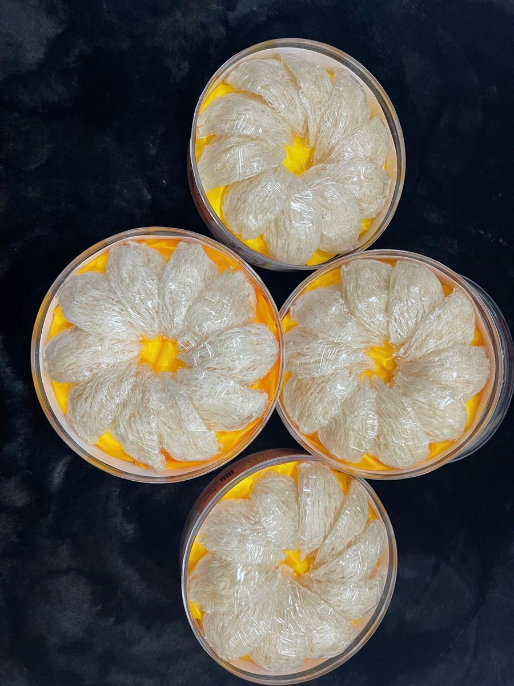
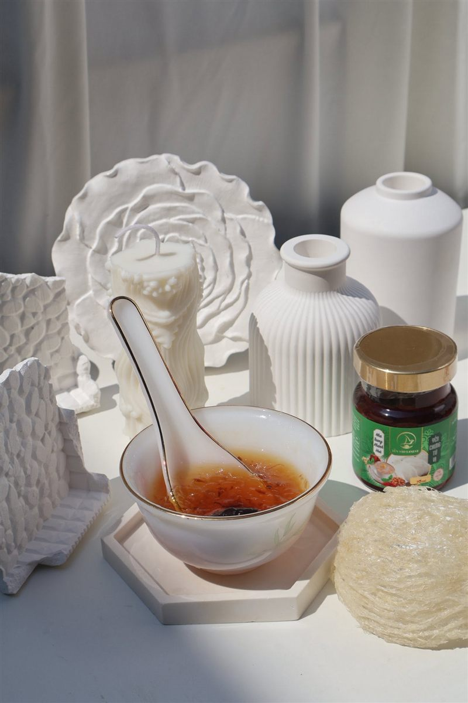

Câu Hỏi Thường Gặp Về Yến Sào: Lanest Trả Lời Ngắn Gọn, Có Nguồn
Yến Sào Lanest · Đăng ngày 21/10/2026

Mỗi ngày đội tư vấn của Lanest nhận rất nhiều câu hỏi giống nhau: ăn bao nhiêu, ăn lúc nào, bé mấy tuổi ăn được, yến vàng có sao không. Bài này gom những câu hỏi thường gặp về yến sào lại một chỗ, trả lời ngắn, và chỉ nói những gì Lanest có tài liệu hoặc làm hằng ngày ở xưởng. Câu nào cần đọc kỹ hơn, cuối mỗi phần có đường dẫn sang bài chi tiết.
Tổ yến tinh chế Lanest đóng hộp, sợi yến được thợ đắp lại thành hình hoa
1. Hỏi về yến sào nói chung
Yến sào là gì?
Là tổ do chim yến làm bằng nước bọt, hình thành trên vách đá hoặc trong nhà yến. Các dòng tổ yến Lanest đang bán đều thu hoạch từ nhà yến ven biển miền Trung, chủ yếu ở Khánh Hòa, Bình Định, Phú Yên, Ninh Thuận, Bình Thuận.
Trong tổ yến có gì?
Theo cẩm nang tổng quan của Lanest, 100g tổ yến có khoảng 45–55% protein, 18 loại axit amin và 31 nguyên tố vi lượng như canxi, sắt, magie, kali, kẽm. Riêng mẫu Yến Sào Tinh Chế Lanest gửi kiểm nghiệm có kết quả đạm 62,7%, không phát hiện Salmonella và kim loại nặng.
Yến có phải thuốc không?
Không. Yến là thực phẩm, không phải thuốc và không thay thế thuốc chữa bệnh. Cẩm nang của Lanest cũng nói thẳng: yến không phải "thần dược tức thì", chỉ có ích khi được dùng đúng và đều.
2. Hỏi về cách dùng: bao nhiêu, lúc nào
| Đối tượng | Số lần | Mỗi lần (yến khô) | Thời điểm |
| Trẻ 1–3 tuổi | 1–2 lần/tuần | 2–3g | Giữa buổi sáng hoặc tối trước ngủ |
| Trẻ 4–12 tuổi | 2–3 lần/tuần | 3–5g | Sau bữa sáng khoảng 1 tiếng |
| Người trưởng thành | 2–3 lần/tuần, tối đa 3–5 lần | 5–10g | Tối, trước khi ngủ khoảng 1 tiếng |
| Người lớn tuổi, người cần phục hồi | Khoảng 3 lần/tuần | Theo sức ăn | Sáng sớm hoặc tối, khi bụng nhẹ |
Hai lưu ý đi kèm: không ăn yến ngay sau bữa chính, và dùng đều đặn thay vì ăn dồn rồi bỏ ngang. Ăn nhiều hơn không có nghĩa là tốt hơn. Chi tiết trong bài hướng dẫn dùng yến đúng cách.
3. Hỏi về đối tượng đặc biệt
Trẻ mấy tuổi thì ăn được yến?
Tài liệu của Lanest ghi trẻ từ 12 tháng tuổi trở lên mới nên dùng. Lần đầu cho bé ăn lượng nhỏ để xem bé có hợp không. Xem thêm bài yến sào cho trẻ em.
Bà bầu, người tiểu đường, người đang điều trị bệnh có dùng được không?
Những trường hợp này nên hỏi bác sĩ đang theo dõi trước khi dùng. Yến chưng thường có đường phèn; người cần hạn chế đường có thể tự chưng ít đường, hoặc chọn vị dùng đường isomalt thay đường phèn. Bài yến sào cho người tiểu đường nói kỹ hơn.
4. Hỏi về sản phẩm: thô, tinh chế, yến hũ
Yến thô khác yến tinh chế thế nào?
Yến thô chỉ được làm sạch nhẹ bên ngoài, chưa phun sương, chưa ngâm nước nhặt lông; mua về phải tự ngâm khoảng 1–2 giờ rồi nhặt lông. Yến tinh chế đã được ngâm và nhặt sạch lông bằng tay, mua về chỉ cần ngâm rồi chưng.
Tổ yến màu vàng có ăn được không?
Màu kem, cam vàng nhạt là đặc tính tự nhiên của một số tổ; tổ già cũng có thể ngả vàng. Chỉ khi yến chuyển sang vàng đậm hoặc đỏ mới là dấu hiệu bị nhiễm, không nên dùng. Lanest không tẩy trắng yến để "sửa" màu.
Yến hũ chưng sẵn có chất bảo quản không?
Hai dòng yến hũ của Lanest đều ghi không chất bảo quản, không phẩm màu. Dòng 7g yến tươi có thêm collagen thủy phân, chất xơ inulin, chất ổn định, chất điều chỉnh độ acid và hương yến tổng hợp, tất cả in trên nhãn. Dòng nguyên chất 100% chỉ có nước tinh khiết, tổ yến, đường phèn và nguyên liệu theo vị.

Hũ yến chưng tứ vị 7g yến tươi bên chén yến và một tổ yến tinh chế
5. Hỏi về chưng và bảo quản
- Chưng thế nào? Ngâm yến bằng nước lạnh cho nở mềm, chưng cách thủy lửa nhỏ khoảng 20–30 phút, cho đường gần cuối. Không đun sôi trực tiếp, không chưng quá lâu kẻo yến nát.
- Yến đã chưng để được bao lâu? Cất ngăn mát và dùng trong 1–2 ngày, nên chưng vừa đủ ăn.
- Yến khô cất ở đâu? Nơi khô ráo, thoáng mát, tránh ẩm và nắng trực tiếp, hộp đậy kín.
- Yến hũ đã mở nắp? Phải bảo quản lạnh.
Xem các bước cụ thể ở bài hướng dẫn chưng yến đúng cách và cách bảo quản tổ yến.
6. Hỏi về mua hàng và chất lượng
Làm sao biết yến thật?
Yến thật thơm nhẹ, sợi dai và rõ, ngâm nở từ từ, chưng nước trong. Yến pha trộn thường có mùi hắc hoặc không mùi, sợi bở, nở nhanh bất thường, chưng nước đục. Ngoài ra nên mua nơi có chứng nhận an toàn thực phẩm, tem chống giả, sẵn sàng cho xem giấy kiểm nghiệm. Bài phân biệt yến sào thật giả có bảng so sánh đầy đủ.
Lanest làm yến thế nào?
Yến tinh chế của Lanest do đội thợ riêng làm sạch bằng tay, qua 4 chốt kiểm: thợ nhặt, thợ đảo lại, thợ đắp và nhân viên kiểm tra trước khi đóng hộp. Không tẩy trắng, không độn tăng trọng lượng, hàng không đạt thì loại.
Câu hỏi thường gặp
Ăn yến mỗi ngày có được không?
Không cần. Cẩm nang tổng quan của Lanest ghi người lớn dùng 2–3 lần/tuần, hướng dẫn dùng yến ghi tối đa 3–5 lần/tuần, mỗi lần 5–10g yến khô. Bắt đầu từ mức thấp và dùng đều đặn là đủ. Người đang điều trị bệnh nên hỏi bác sĩ về lượng dùng phù hợp.
Mua yến bị lỗi thì đổi được không?
Được, trong vòng 15 ngày kể từ khi nhận hàng và còn hạn sử dụng, nếu hàng vỡ, rò rỉ, ẩm mốc, giao sai. Anh chị nên quay video lúc mở hộp để làm bằng chứng.
Hỏi thêm ở đâu?
Anh chị gọi 0258 6278 627 hoặc nhắn fanpage Yến Sào Lanest, đội tư vấn trả lời trong giờ hành chính.